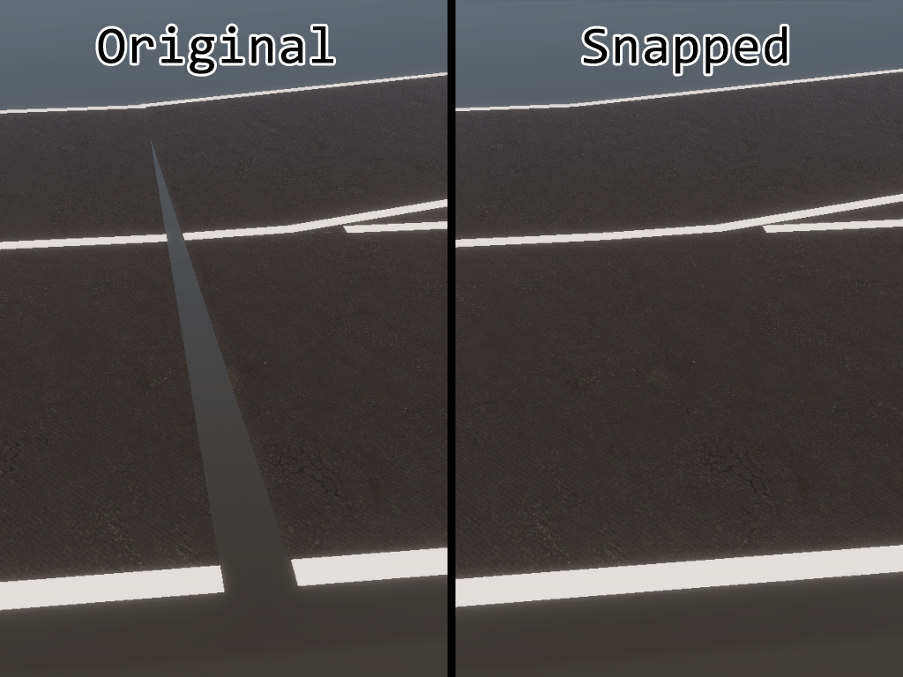
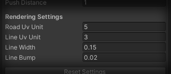

HD Map Mesh Generation#
Video top#
Introduction top#
SVL Simulator provides an option to automatically generate meshes for imported HD map data, allowing you to build and upload custom environments for your simulations. Depending on your needs this tool can prepare textured road meshes for rendering, mesh colliders, or both.
The mesh builder does not use HD map files directly, but instead operates on Simulator's unified internal data structure for map annotations. Some of the most popular file formats can be imported through HD Map Importer tool. After import is finished, you can use that data to generate meshes.

Accessing the mesh builder top#
To access the mesh builder window, open Simulator project in Unity editor, then navigate into Simulator/Build HD Map Mesh on the menu bar. Mesh builder window will be opened.

Builder settings top#
Mesh builder window offers two non-exclusive options for mesh generation: colliders and renderers.
Selecting colliders will create MeshCollider component for each of the roads. These colliders will be used by all entities in simulation, including agents and NPCs.
Selecting renderers will create MeshRenderer component (along with MeshFilter) for each of the roads. Meshes created this way will be visible in simulation, textured, and will include lane-lines.
Mesh Settings top#
Settings in this tab will affect general shape of the mesh, both for colliders and for rendering.

| Parameter Name | Description |
|---|---|
| Snap Lane Ends | If this option is enabled, end vertices from subsequent lanes will be snapped together within distance threshold to remove holes. |
| Snap Threshold | Maximum distance (in meters) within which lane ends can be snapped together. Only available if Snap Lane Ends is enabled. |
| Push Outer Verts | If this option is enabled, external lane boundaries will be pushed out to create roadside. |
| Separate Outer Mesh | If this option is enabled, pushed out boundaries will be split into separate mesh. Only available if Push Outer Verts is enabled. |
| Push Distance | Distance (in meters) to push external lane boundaries out. Only available if Push Outer Verts is enabled. |
Snap Lane Ends top#
Option for snapping lane ends can improve overall mesh quality if lanes in the original HD map file are not perfectly aligned. If you notice any holes like the one shown below, try enabling this option. If gaps are larger, you can try increasing snap threshold.

Push Outer Verts top#
This option is useful if you want to create additional roadside that was not defined in original HD map file. Lane-lines are not affected by this, and only outer lane boundaries are expanded. This can help prevent vehicles from falling off the road when even slightly crossing the side line.

Separate Outer Mesh top#
When this option is enabled, all roadsides created by using Push Outer Verts option will be split into separate meshes, instead of being an extension of the road. This will result in more complex geometry, but can be useful if you want to use different materials for roads and roadsides. Using separate meshes can also fix artifacts that rarely occur when tight corners are pushed out by a significant amount.

Rendering Settings top#
Settings in this tab will affect visuals of generated meshes. If Create Renderers option is disabled, this tab will not be available.

| Parameter Name | Description |
|---|---|
| Road UV Unit | Distance (in meters) defining size of a single UV coordinates tile for roads. Increasing this value will stretch road texture over larger area. |
| Line UV Unit | Distance (in meters) defining size of a single UV coordinates tile for lane-lines. Increasing this value will stretch line texture over longer distance. |
| Line Width | Width (in meters) of a single lane-line. Double lines will be scaled proportionally. |
| Line Bump | Vertical distance (in meters) between road and lane-lines. This elevates lines slightly to avoid clipping. |
Material Settings top#
Materials used on generated meshes are not exposed in mesh builder window. Instead, they are defined in an asset that can be found under Assets/Resources/Editor/HDMapMaterials.asset.
Please note that even though it's possible to replace default materials with your own, it's generally not advised to use different shaders. Custom materials and shaders will render properly, but some additional features, like weather effects, might not be compatible and will not show.
Building HD map environment top#
It's possible to prepare a simple, usable environment for simulation from HD map data only. To create environment bundle from HD map data, follow the steps below.
- Launch SVL Simulator from the Unity Editor (as described here).
- Create new scene through
File/New Scenemenu item (note: avoid creating scene through context menu - it will lack required components). - Access HD Map Importer tool and import your HD map data.
- Access HD Map Mesh Builder tool and generate both colliders and renderers.
- Locate
SpawnInfoobject in scene hierarchy and move it to the desired EGO vehicle spawn point. - Create new directory with your desired environment name under
Assets/External/Environments/. - Save the scene under new directory. Final path of the newly created scene should be
Assets/External/Environments/SceneName/SceneName.unity. - (optional) Create NavMesh to enable pedestrians. See NavMesh section for details.
- Your environment is now ready to be built. Follow the build instructions for assets.
Creating NavMesh for pedestrians top#
If you plan to use pedestrians on generated environment, you'll have to bake navigation meshes for pathfinding. After road meshes are created and the scene have been saved, follow the steps below to prepare NavMesh.
NOTE: Pedestrian annotations must be created for pedestrians to navigate the NavMesh. See Map Annotation.
- Access Navigation window through
Window/AI/Navigationmenu item. - In the
Objecttab, selectMesh Renderersfiltering option. - Select all generated mesh renderers in scene hierarchy.
- Enable
Navigation Staticoption for all selected mesh renderers and change their layer toRoad.- Note: If you separate outer meshes, you can assign different layer to them, e.g.
Sidewalk. All of these objects have_roadsidepostfix.
- Note: If you separate outer meshes, you can assign different layer to them, e.g.
- In the
Baketab, clickBakebutton to generate the NavMesh. - Save the scene.